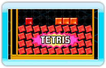
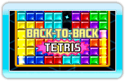

12 |
Techniques |
 |
|
In Tetris Party, make use of the following techniques to gain bonus points as well as send several penalty blocks into an opponent's Matrix.
Bonus points are awarded when you clear 4 lines with the I-Tetrimino. This is one of the classic Tetris techniques.
 Bonus points are awarded for consecutive lines cleared. The bonus award ends when you fail to clear consecutive lines. Bonus points are awarded for consecutive lines cleared. The bonus award ends when you fail to clear consecutive lines.
 When you clear all blocks on the Matrix, bonus points are awarded. This bonus will not be awarded if you use items such as "Line Kick".
When you clear all blocks on the Matrix, bonus points are awarded. This bonus will not be awarded if you use items such as "Line Kick".

A successive chain of
"TETRIS", "T-SPIN SINGLE" and "T-SPIN DOUBLE" will award bonus points. If the chain is interrupted by some other elimination technique (example: a normal "DOUBLE"), this bonus is not awarded. |


 |
 |
 |